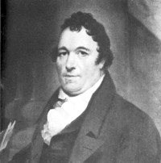

by
Stefan Bielinski
William James was the founder of the Albany James family. He may have been Albany's first "millionaire." He was born in Northern Ireland in 1771 - the son of tenant farmers William and Susan Mc Cartney James.
According to traditional sources, he came to America with a "small sum of money" in 1789. By 1793, he was a clerk in the Albany dry goods store of John Robison. In 1795, he opened his own store. In 1798, he built a tobacco factory near the Albany waterfront. In 1800 his first ward household included only one child. Immediately successful, he soon began to acquire real property in all parts of the booming city. Over the next two decades, his businesses had a number of partners.
In 1796, he married Albany native Elizabeth Tillman. After her death, he married Mary Ann Connolly from Ireland at the Caughnawaga Dutch church. That marriage may have produced only one child. Following her death, in 1803 he took for his third wife Catherine Barber (no relation to John Barber the publisher). The union brought them ten children - eight of whom survived. In 1802, "William of Albany" became a naturalized American citizen.
By 1815, his store at 1 Green Street (corner of State) was an Albany landmark. He had another store on the dock. He served on the boards of a number of community organizations, was an advocate of the Erie Canal, and was involved in the salt business - perhaps leading to the establishment of the saltworks at Jamesville.
He retired from business before 1820 - turning operations over to his son, Robert, who died in 1821 at the age of twenty-four. But the father continued to acquire and trade in city real estate for the remainder of his life. At the time of his death, he owned many parcels of Albany property - probably more than any of his contemporaries.
William James died in December 1832, a few days shy of his sixty-first birthday! His will passed probate in January 1833. James Street - formerly Middle Alley, was named for him. Eminently successful as a businessman and entrepreneur, "William James of Albany" was a much different citizen than his more famous descendants.
notes
 Sources: The life of William James is CAP biography number 2136. This profile must focus on his eighteenth-century Albany life and is derived chiefly from family and community-based resources.
Sources: The life of William James is CAP biography number 2136. This profile must focus on his eighteenth-century Albany life and is derived chiefly from family and community-based resources.
Portrait by Ezra Ames about 1822. Reproduced in Ezra Ames, p. 106.
first posted: 3/15/04; revised 10/24/10